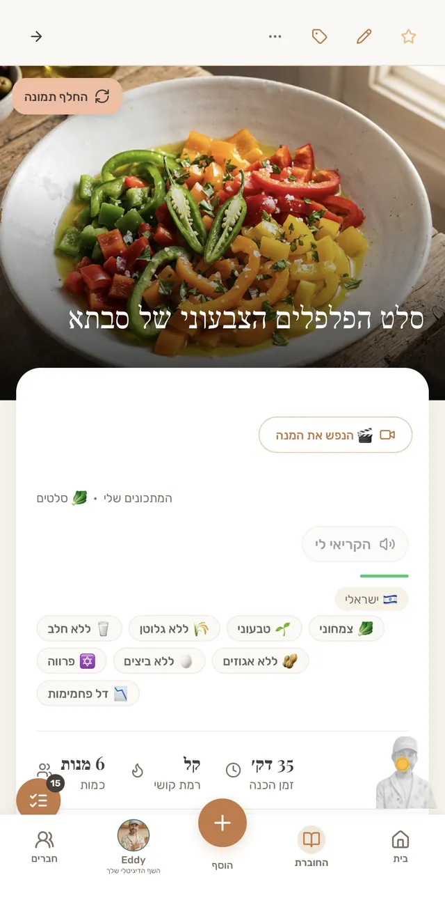
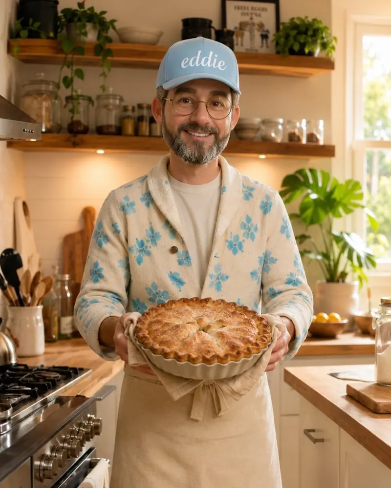
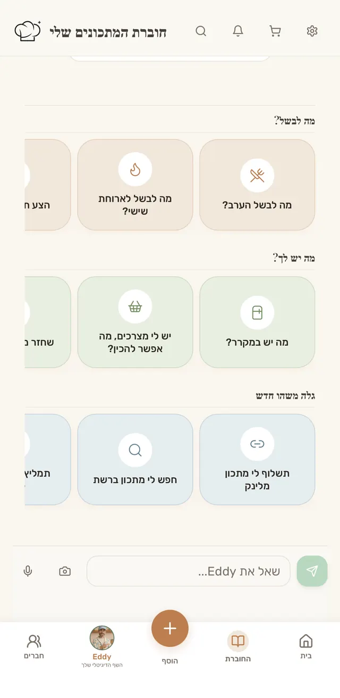
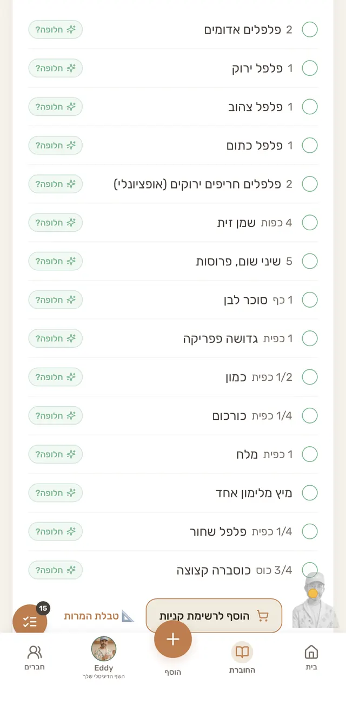
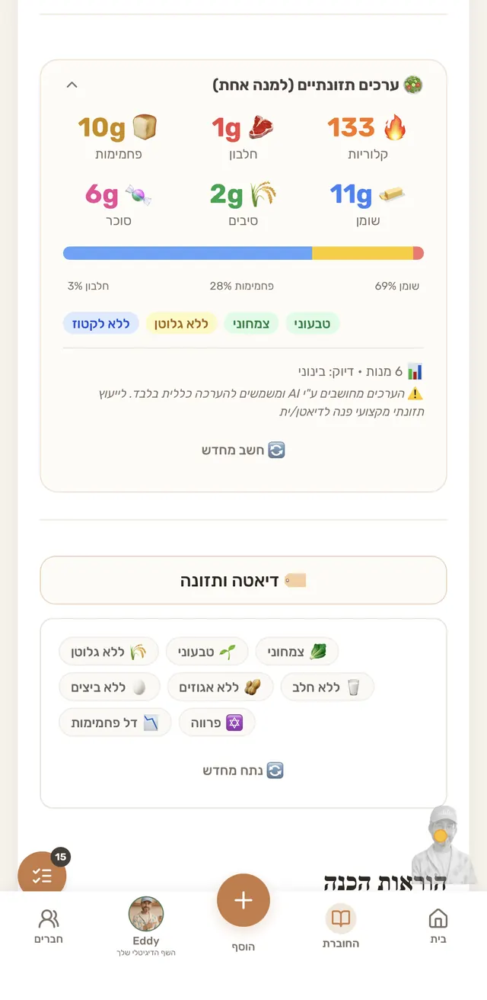
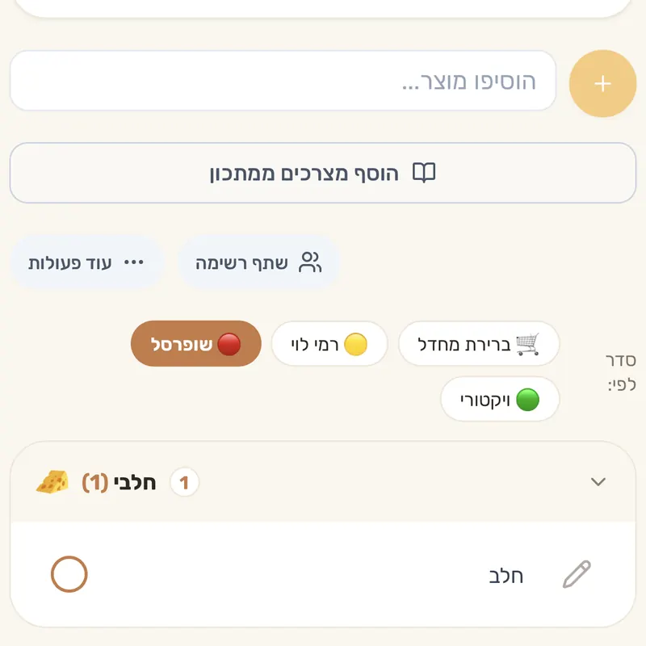
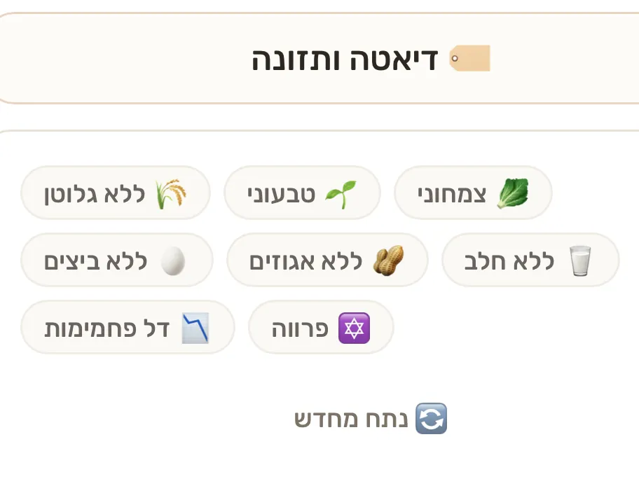
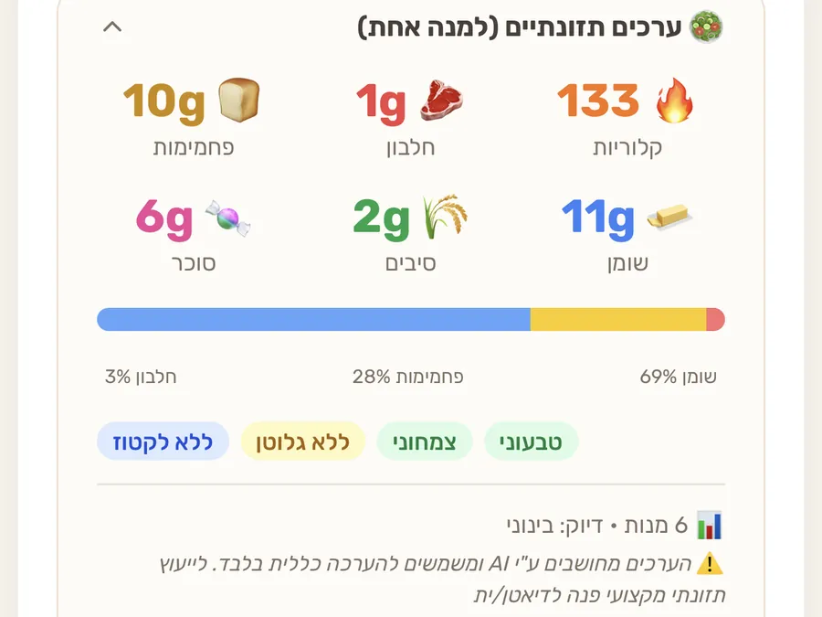
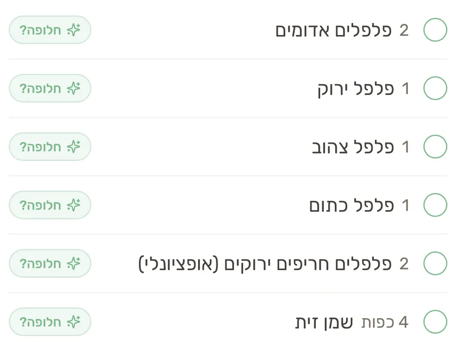

מהפוסט שלך לחוברת שלהם.
4,832 מתכונים כבר נשמרו אצלנו מאינסטגרם, וכל אחד מהם נשאר עם קישור למקור.
הזמנה לשיתוף פעולה
ואדי לידם, כשהם מחליטים מה לבשל.

אפליקציה ישראלית שבה שומרים מתכונים, בונים רשימת קניות ומחליטים מה לבשל. אדי, השף הדיגיטלי, הוא הפנים שלה. והוא כבר יודע לארח.
אפליקציה ישראלית שבה שומרים מתכונים, בונים רשימת קניות ומחליטים מה לבשל. אדי, השף הדיגיטלי, הוא הפנים שלה. ומותג שנמצא כאן, נמצא ברגע ההחלטה.
חוברת המתכונים שלי היא אפליקציה ישראלית לשמירת מתכונים, רשימות קניות ותכנון ארוחות. כל מתכון שנשמר מהפוסט שלך נשאר עם קישור חזרה אלייך.

המארח
השף הדיגיטלי של החוברת
אנשים לא פותחים אפליקציית מתכונים כדי לגלול. פותחים כדי להחליט מה לבשל. ואדי הוא מי שמחכה שם, עם הצעה, תפריט ותשובה.
אצל אדי, שיתוף פעולה הוא אירוח, לא פרסומת. מגיעים עם מתכון טוב, והמתכון נשאר בחוברת.
בתוך האפליקציה



רשימת קניות משותפתמסתדרת לפי סדר המדפים ברשת שנבחרה

הקהל
לא מסקר ולא מניחוש: מתוך המתכונים שהם שמרו בעצמם.
המספרים · נכון לאוקטובר 2026

אפליקציה צעירה, באוויר מפברואר 2026, והיום גם ב-App Store וב-Google Play.
יותר משליש מהמתכונים הם מאפים וקינוחים.
הוכחה, לא הבטחה
שיתוף פעולה מוצלח של שלושה חודשים, יולי עד ספטמבר 2026.
11K+מבקרים נכנסו לאפליקציה ישר לאזור שלו
ספטמבר, החודש האחרון של שיתוף הפעולה, היה חודש השיא שלנו בהרשמות.
עכשיו אנחנו מחפשים את שיתוף הפעולה הבא.
ההצעה
מותגים כבר בפנים, בלי ששילמו. בואו נהפוך נוכחות מקרית לנוכחות שלכם.
4,832 מתכונים כבר נשמרו אצלנו מאינסטגרם, וכל אחד מהם נשאר עם קישור למקור.
ערכים תזונתיים משוערים למנה, תיוג תזונה וסינון לפיו, רשימת קניות ישר מהמתכון, ואדי, שמתחשב בהעדפות התזונה שהם הזינו לו.

בתחתית הכרטיס, האפליקציה עצמה כותבת: "לייעוץ תזונתי מקצועי פנה לדיאטן/ית"
כל משתמש חדש בוחר מתכוני פתיחה לחוברת שלו. מתכון שלך יכול להיות שם, עם השם שלך.
קישור הצטרפות, פיד מתכונים משותף, ודף ניהול בשבילך.
עם קישור כניסה ציבורי, כמו שהיה לשף אבי לוי.
כל משתמש חדש בוחר מתכוני פתיחה לחוברת שלו, לפי הסגנון שבחר. המתכון שלכם יכול להיות אחד מהם.

ליד כל מצרך במתכון: חלופה בלחיצה
המועדון נפתח למי ששמר 10 מתכונים ומעלה, כלומר למי שכבר בנה חוברת אמיתית. אתם מנפיקים קוד קופון וסופרים את המימושים אצלכם.
לכל מתכון יש דף שיתוף ציבורי, ו-2,737 מבקרים כבר פתחו מתכון ששותף להם. המתכון שלכם יוצא לערוצים שלכם, והקהל שלכם פוגש את החוברת.
כמה מתכונים אצלנו כבר מזכירים את המוצר או את הקטגוריה שלכם, מה מבשלים בעונה, ואיזה פילוח תזונתי. נתונים מצטברים בלבד, בלי מידע אישי.
עם קישור שאתם מפיצים לקהל שלכם, ומדידה של מי הגיע. זה הפורמט של שיתוף הפעולה עם אבי לוי.
מתכון שנשמר מהפוסט או מהאתר שלכם נשאר עם קישור למקור.
שכל משתמש חדש בוחר מהם לחוברת שלו.
ליד כל מצרך במתכון: חלופה בלחיצה
המתכון יוצא לערוצים שלכם, והקהל שלכם פוגש את החוברת.
עם קישור כניסה שנמדד, כמו שהיה לשף אבי לוי.
פורמט אחד, 90 יום, ודוח פעם בחודש.
מה נמדד: כניסות דרך הקישור שלכם, שמירות של המתכונים שלכם, ומימושי הקופון שאתם סופרים אצלכם.
התגיות והערכים התזונתיים הם הערכה אוטומטית, והמשתמשים יכולים לתקן אותם.
אנחנו לא נותנים ייעוץ רפואי, ולא מציגים מזון כמרפא או כמונע מחלה.
שותפים מקבלים מאיתנו רק מספרים מצטברים, בלי מידע אישי על משתמשים.
נשמח לדבר
שיחה אחת עם רון, ומתחילים פיילוט משותף. כל הצטרפות דרך הקישור שלך נספרת.
חנוכה מתחילה ב-4 בדצמבר בערב. פיילוט שמתחיל עכשיו מגיע אליה מוכן.
להתנסות
הכי טוב לפגוש את אדי באפליקציה עצמה.